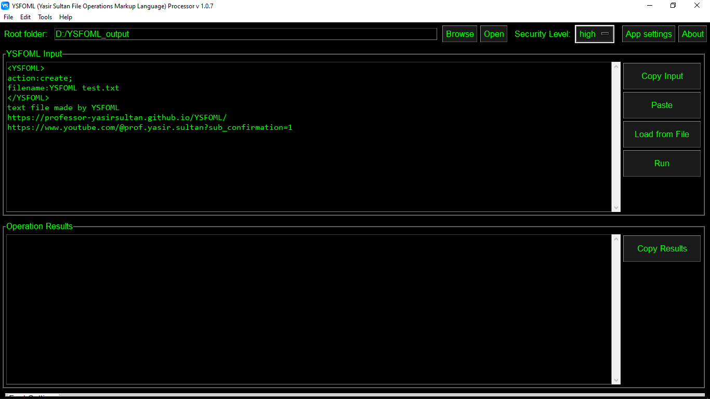
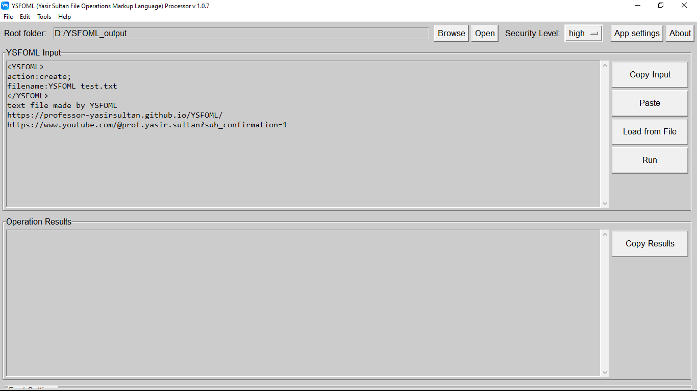

YSFOMLYasir Sultan File Operations Markup Language |
1. Introduction ↑ Top
YSFOML (Yasir Sultan File Operations Markup Language) is a powerful and intuitive markup language designed to streamline and automate file system operations. It provides a structured and human-readable way to define a series of file-related tasks, making complex operations simple and repeatable. YSFOML aims to bridge the gap between human intent and automated file management, offering a robust framework for various development and maintenance workflows.
One of the primary motivations behind the creation and continuous development of YSFOML is to empower programmers in their development process through the strategic use of Artificial Intelligence. YSFOML is meticulously designed to facilitate AI interaction with file systems, while simultaneously upholding the highest levels of security through its inherent 'human-in-the-loop' model. This crucial design choice ensures that AI models can leverage YSFOML for powerful automation without the risk of accessing sensitive data or executing malicious behaviors, thereby providing a secure and controlled environment for AI-driven development.
It is important to clarify that while the MCP protocol and YSFOML are distinct entities. please check section (YSFOML future aspects)
2. Key aspects and features: ↑ Top
2.1. Human-Readability:
YSFOML is designed to be easily understood by humans, making it transparent and auditable.
2.2. AI Integration:
It is particularly useful for enabling Artificial Intelligence (AI) to interact with file systems in a controlled and auditable manner. AI models can generate YSFOML instructions to perform tasks like creating new files (e.g., source code, configuration files) or modifying existing ones (e.g., appending content, replacing text).
2.3. Human-in-the-Loop Security:
A core principle of YSFOML, especially when used with AI, is its "human-in-the-loop" security model. This means that while AI can generate complex YSFOML instructions, a user must review and approve these instructions before they are executed by a dedicated YSFOML parser application. This ensures users maintain ultimate control and oversight over their local file system, particularly for operations that could modify or delete files.
2.4. Structured Operations:
It provides a structured way to specify file system actions, allowing for clear and auditable processes.
2.5. Security Levels:
YSFOML operations are categorized by security levels (e.g., low for read-only, medium, high) to indicate their potential impact on the file system. This allows the YSFOML parser to enforce permissions or require higher user confirmation for more impactful operations.
3. Documentation ↑ Top
Please check the full documentation, including detailed action references and core concepts, at the official YSFOML Specification and Documentation page: YSFOML (Yasir Sultan File Operations Markup Language) Specification and Documentation
4. How to Use ↑ Top
To use YSFOML, follow these general steps:
- Run the YSFOML Parser application on your local machine (check next section).
- go to out AI Bot https://poe.com/YSFOML_expert.
- Follow bot instructions
Or check our youtube playlist.
5. YSFOML Parser/Processor ↑ Top
The YSFOML Parser/Processor is an application designed to interpret and execute YSFOML instructions.

|


 |
Please select one of the following options for deployment:
-
For End-Users (Windows Application):
1. Download the compressed file (.zip).
https://professor-yasirsultan.github.io/YSFOML/YSFOML_1_0_7.zip
2. Extract the contents of the downloaded file.
3. Navigate to the 'parser' directory within the extracted folder.
4. Execute 'parser.exe'. -
For Developers/Experts (Open-Source Python Code):
Obtain the Python source code and run it in your local environment.
https://github.com/professor-YasirSultan/YSFOML/
Please note that the version provided in the zipped file is more current than the source code available in the repository.
6. Useful Links ↑ Top
-
YSFOML GitHub Repository:
https://github.com/professor-YasirSultan/YSFOML/ -
YSFOML HomePage (GitHub Pages):
https://professor-yasirsultan.github.io/YSFOML/ -
Professor Yasir Sultan's YouTube Channel:
https://www.youtube.com/@prof.yasir.sultan?sub_confirmation=1 -
YSFOML YouTube playlist (Arabic and English):
https://www.youtube.com/playlist?list=PL-3wR8Xwb_8-7AEqldUesYo9lhI3biYKn -
AI Bot Interaction Examples:
https://poe.com/YSFOML_expert